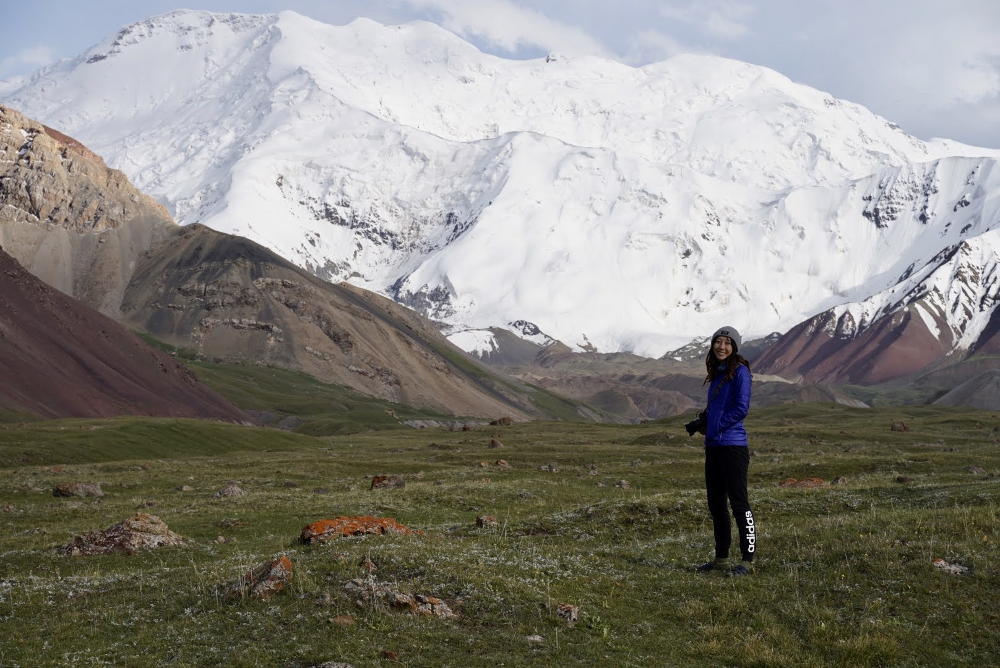

That's "hello" in Mongolian, where a part of my family is from. I'm from
El Paso, Texas .
Skills
Soft Skills
Empathy
Emotional Intelligence
Problem Solving
Technical Skills
Research Collection and Writing
Statistical Analysis and Data Visualization
Environmental Science
Mandarin Chinese (Intermediate)
Interests
I'm a fan of pushing my limits and exploring my curiosity. This is why you can find me in mountains or in some random part
of the world. In 2020, I lived abroad in Kyrgyzstan for a year and got to explore the wild mountains of the upper Himalayan Belt.
Career Goals
One day, I hope to bridge my love for environmental science and web development. My ultimate dream job
would be to develop websites for an organization such as the United Nations. But to be honest, I'm the happiest
working on any website.
Kel Suu Lake in Kyrgyzstan

Peak Lenin Base Camp, 3500m